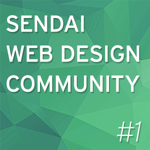
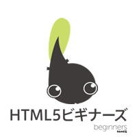
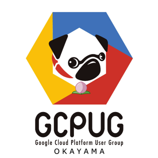
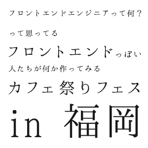
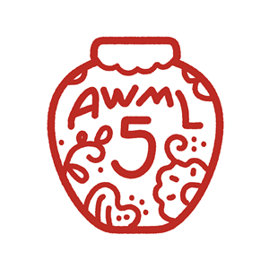

<htmlday>特製Tシャツ・特製ステッカー
6名以上の参加者が見込まれるイベントには、イベント運営者への方々へは特製Tシャツを、イベント参加者への配布用に<htmlday>特製ステッカーを送付いたします。イベントの盛り上げにご活用ください。（※先着順・プレイベントの場合、制作が間に合わないことがありますのでその点はご了承ください。）

今年もやってきたぞ！さあお祭りだ
2015.6.13(土) 日本全国で開催
<htmlday>とは、日本全国でWebに関する多数のイベントを同じ日（6/13）に開催することで、日本のWebを一層盛り上げようという「お祭り」です（毎年6月の第2土曜日に開催しています。）。 <htmlday>に参加して、日本のWebを盛り上げよう！
<htmlday>で開催されるイベントは、誰でも開催することができ、誰でも参加することができます。「Webについて考えよう！」（Think the HTML!）という想いがあれば、どんなイベントでも構いません。例えば、勉強会やハッカソン、はたまた単なる飲み会でも構いません！とにかくWebに関するものであれば何でもOKです！！（昨年のhtmldayの模様はこちらから）
もしよければ<htmlday>に参加して、日本のWebを盛り上げるために、あなたのお力を貸してください！賛同してくださったイベントには、<htmlday>特製ステッカーを差し上げます。（イベント運営者の方々には特製Tシャツもお渡しします。）
<htmlday>に参加するためには、イベント主催者、またはイベント参加者としての2つの方法があります。
Webに関する何らかのイベントを企画してください。
いわゆる「勉強会」でも構いませんし、単なる飲み会でも構いません！（今年は6月1日〜12日までに開催のイベントもhtmldayプレイベントとして、ご紹介させて頂きます）
<htmlday>に賛同してくださったイベントには、以下の特典を用意しています。
6名以上の参加者が見込まれるイベントには、イベント運営者への方々へは特製Tシャツを、イベント参加者への配布用に<htmlday>特製ステッカーを送付いたします。イベントの盛り上げにご活用ください。（※先着順・プレイベントの場合、制作が間に合わないことがありますのでその点はご了承ください。）
賛同イベントの主催者の方には、<htmlday>のロゴデータをご自由にお使いいただけます。
以下の開催イベント一覧（随時更新中！）から、お近くのイベントにご参加ください。
もしかすると、<htmlday>特製ステッカーがもらえるかも！
個別のイベントへの参加は、各イベントのイベントページよりお申込みください。
お住まいのお近くにイベントがない場合は、知り合いに声をかけて、開催することをぜひ検討してみてください！
WebRTC Meetup Tokyo #8

WebRTCに興味がある人向けのWebRTCに特化した勉強会です。プログラミングから新しいサービスアイディアまでなんでもありです！
第9回 HTML5minutes！ ～triton-js～【無料】
HTML5、CSS3、JavaScript、SVG、WebGLなどについて熱く語り合おう！ 毎月第2金曜、「HTML5minutes」を定期開催しています。少しでもご興味のある方は、是非、晴海トリトンスクエア、メンバーズのラウンジまでお越しください。
放送大学HTML5勉強会@東京
放送大学HTML5勉強会は、放送大学の公認サークルとして月１回勉強会と交流会を開催しています。6/11の活動では、htmldayということと、20回目の記念活動日ということで、「温故知新、世界ではじめてのホームページを作りましょう」と題して、欧州原子核研究機構CERNで作られた世界ではじめてのホームページを、タグを手打ちで完成させ、先人への想いをはせます。
DIST.7 「一歩差がつくWebデザインテクニック」
DISTは、次の3つをコンセプトとして、有志が運営する非営利の勉強会です。「職種の垣根を越える」「特定の技術に依存しない」「今日から現場で使える」。デザイナー、デベロッパーという区別をつけて一人一役での仕事をしていた時代は終わろうとしています。職種や技術を超えて、Web制作にまつわるあらゆることを、みんなで集まって学んでいく会を作りたいと考えています。
INTER-Mediator勉強会2015-#4
HTMLの記述を中心にしたデータベース連動Webアプリケーションが開発できるフレームワーク「INTER-Mediator」の定例の勉強会です。今回は、JavaScriptによる拡張の仕組みを利用したユーザインタフェースの作成や、FileMaker Serverのオブジェクトフィールドの利用方法などを解説します。
Web先端技術味見部
iBeacon で Physical Webを味見！
駅前留学ノマ
プレイベントとして、鹿児島中央駅前広場でノマドします。まさしく「駅前留学ノマ」です！（微妙になんか違う） ５日間連続で行いますので気が向いた方は是非ご参加ください。
SENNDAI WEB DESIGN COMMUNITY #1 (自称)世界最速Webデザイン勉強会
Webデザイン・コーディング効率化のための勉強会です。 新しいツール、技術を用いて即興でWEBサイトを世界最速(自称)で作成します！ 参加者から作成するサイトのお題を頂き、カンプを10分で作成。 スライス、コーディング、データ最適化、アップを10分で作成。 計20分でモバイル対応のWEBサイトを制作します。 作成したサイトを確認しながら、サイト効率化について解説します。 初心者歓迎。 これからWEBデザインを学びたい人にも分かりやすく解説します。
HTML5オールスターズ
日本を代表するHTML5エンジニアが一同に集結し、HTML5エンジニアのためのHTML5勉強会を開催します！HTML5で著名な方々による最近の技術Tipsや、最新情報／面白いネタなどなどを凝縮してお伝えします！
第58回 HTML5とか勉強会 ーHTML5最新情報@Google I/O, de:code 2015
今年も Google I/O の季節になりました。毎年恒例の Google I/O で発表されたホットなトピックスを今回も余すことなくお伝えします！また、今回は同時期に開催された de:code も合わせて最新情報をお伝えしたいと思います。同会場で開催の「HTML5オールスターズ」の後にのりこめー！
Build Insider OFFLINE 第3回 ― Microsoft Edge スペシャル
Build Insiderが毎年、htmldayに開催しているWeb開発者向けのオフラインイベント！ 今年は、Windows 10に搭載される新ブラウザー「Microsoft Edge」（コード名： “Project Spartan”）がテーマです。
第11回HTML5ビギナーズ 【ハンズオン】Visual Studio Codeを使って、jQuery+HTML5 APIでスライドショーを作ろう！
htmldayということで、html5のAPIであるFile APIとjQueryを使って実際に動くものを作るハンズオン勉強会(HTML5 Conference 2015の再演)を、マイクロソフトさんが無償提供していてMacでも使えるウェブおよびクラウドアプリ向けコードエディタツール Visual Studio Codeを使用して開催致します。
HTML5をこれから学ぶ人のためのJavaScriptセミナー
インターネット・アカデミーでｊは、6月13日(土)に「HTML5をこれから学ぶ人のためのJavaScriptセミナー」を開催します。セミナーでは、HTML5とJavaScriptの今後の需要や、最新のWeb情報についてご紹介します。
Webデザイン最前線
特定非営利活動法人 Web Directors Forum （通称：WDF、ダブリュディーエフ）は、石川県を中心としたエリアでWeb制作に携わっている方や、企業のWeb担当者に向けたセミナーイベントを開催する団体です。 今回のテーマは、「Webデザイン最前線」。デザインとひとことで言っても、Web制作で求められるフィールドは年々拡がりつつあります。Webデザインに携わる私たちが今知っておくべきこと、コミュニケーションのあり方などを考える機会となればと考えています。
WEB TOUCH MEETING
WEB TOUCH MEETINGは、主に広島県、中国地方の方を対象にウェブ周りの技術や知識に関して自分は知ってる当たり前のことをまずはさわりの部分からでもお互いにしあいましょうという会です。
GCPUG岡山 #2
GCPUG(ジーシーパグ)はGoogle Cloud Platformを普及させることを目的とし、Googleと共にGCPをより良くし、盛り上げていくユーザーグループです。今回GCPUG岡山支部は当日に飲み屋さんを探した後に「WebにまつわるGCPもくもく会」を開催します。WebやGCPを盛り上げましょう！q@n@p
「祭りの時間はお終いだ!!」
前半「WebComponentsを使う回」、後半「HTML5の基礎練習を繰り返す回」の2部構成になっています。 詳細なタイムスケジュールは規定されていませんが、前後半共に90分程度のトレーニングコースを適宜休憩を挟みながら進めていきます。
YEOMANとか勉強会@鹿児島 #05 HTML5をハックする！
YEOMAN ハンズオン鹿児島も今回で5回目となります。今回もYEOMAN関係なくHTML5ハッカソンを行います！
「第58回 HTML5とか勉強会」を芋焼酎飲みながら見る会
htmldayに東京で開催される「第58回 HTML5とか勉強会」の動画配信を鹿児島から芋焼酎飲みながら見るという会です。
フロントエンドエンジニアって何？って思ってるフロントエンドっぽい人たちが何か作ってみるカフェ祭りフェス in 福岡
福岡のアラタナ研究所が1日限りの復活です。フロントエンドっぽい人たちで何か作ってみませんか？ハッカソンほどハードじゃない。もくもく会ほど寡黙じゃない。おもしろいことをやりたければ、スキルは問いません。コンテストが主目的ではありませんが、最近（悪い意味で）話題のアレを賞品として用意してます。がんばるぞい！
こねくり家でWeb談義
Web談義は入門的な話から技術的な話まで、発表を通じて新しい知識や技術を身につけたり、一緒に切磋琢磨しあう仲間を見つけたりできるイベントです。 古民家をリノベーションしたカフェで開催します！
沖縄AWML5 ~HTML5カルタで遊びながら飲む会~
出来る限り敷居と意識が低いIT系の人が集まる沖縄コミュニティAWML5。HTML5カルタで遊びながらWEBをネタに喋ったり飲んだりします。
Polytechnic Hakodate

公立はこだて未来大学の学生が企画する、PolymerやWeb Componentsの勉強会です。Material Designのサイトも簡単に作れちゃうPolymerをコードラボの形式で触ってみます。
 松崎 剛
松崎 剛
 鳴釜優子
鳴釜優子